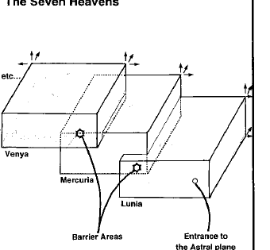

七重天堂 · Seven Heavens
七重天堂是以法律和善良为核心的七层位面。每一层都像一座向上延伸的山，层与层之间有屏障、门和登高的路径。越向上，越接近纯粹的善良和秩序；从星界进入时，旅行者首先到达最外层的月之天堂。
七层分别为：月之天堂鲁尼亚（Lunia）、水星天堂墨丘利亚（Mercuria）、金星天堂维尼亚（Venya）、太阳天堂索拉尼亚（Solania）、铂金天堂默提恩（Mertion）、水晶天堂乔瓦尔（Jovar）和神秘的克罗尼亚（Chronias）。各层有独立的城市、河流、山脉与神祇领域。

七重天堂的居民主要是天使、行刑者、守望者、行星天使、金龙和伟大力量的仆从。巴哈姆特（Bahamut）在此拥有铂金龙宫；摩拉丁（Moradin）、伊丝塔和来自多个文化的善良神祇也有领域。进入更高层通常需要证明旅行者的善良、勇气和服从；违反位面规则的来客会被传送回下层或交给守卫。